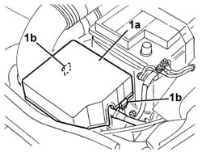
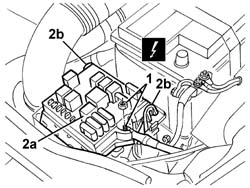
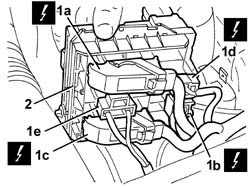

5505A13 supplementary junction control unit in engine bay - r r
- Path
- Procedures > 55 ELECTRICAL EQUIPMENT > 5505 ELECTRICAL CIRCUIT FOR INSTRUMENTS/INDICATORS > 5505A multi-function components > 5505A13 supplementary junction control unit in engine bay - r r
- Kind
- repair procedure (removal / refitting; the operation number is the code)
- Applies to
- all engines; all production periods
- Interactive page
- https://sloeber94.github.io/elrnDB-a147/en/#/3025481
Applies to: engines: 1.9 JTD 16V; all production periods
 Removing
Removing
 Refitting
RefittingApplies to: engines: 1.9 JTD 16V; all production periods
Open the bonnet lid.
1. Release the retainers (1a) and remove the cover (1b).

Applies to: engines: 1.9 JTD 16V; all production periods
1. Disconnect the upper electrical connection.
 | Name | Connector |
|---|---|---|
1 | Engine compartment junction unit |
1. Release the control unit (2a) from the side retainers (2b).

Applies to: engines: 1.9 JTD 16V; all production periods
1. Lift the control unit slightly and disconnect the lower electrical connections (1a, 1b, 1c, 1d, 1e).
| Name | Connector |
|---|---|---|
1a | Engine compartment junction unit |
| Name | Connector |
|---|---|---|
1b | Engine compartment junction unit |
| Name | Connector |
|---|---|---|
1c | Engine compartment junction unit |
| Name | Connector |
|---|---|---|
1d | Engine compartment junction unit |
| Name | Connector |
|---|---|---|
1e | Engine compartment junction unit |
2. Recover the control unit

Applies to: all engines; all production periods
Refitting
RemovingCheck that the additional junction unit is not damaged.
Connect the lower electrical connections.
Position the control unit and attach it to the side retainers.
Connect the upper electrical connection.
Close the cover and attach the retainers.
Test the electrical system.
Applies to: engines: 1.9 JTD 16V; all production periods
Topics linked from this page (8)
- 7025A12 Engine front sound insulation COVER - R.R.
- 7025A14 Bonnet LID - R.R.
- B1A Engine compartment junction unit ( Connectors )
- B1B Engine compartment junction unit ( Connectors )
- B1C Engine compartment junction unit ( Connectors )
- B1D Engine compartment junction unit ( Connectors )
- B1E Engine compartment junction unit ( Connectors )
- B1X Engine compartment junction unit ( Connectors )